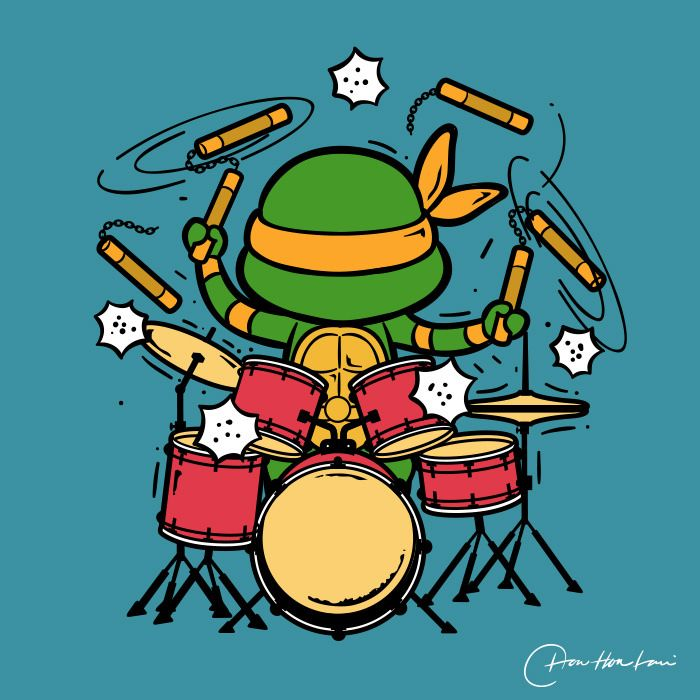

VIRTUAL DRUM KIT
The VIRTUAL DRUM KIT is an interactive virtual instrument that turns your device into a drum set. It allows users to play realistic drum sounds—like snare, crash, kick, and tom—simply by tapping their keyboard or clicking the screen. It is designed to be fun, responsive, and easy to play for anyone who wants to make some noise!